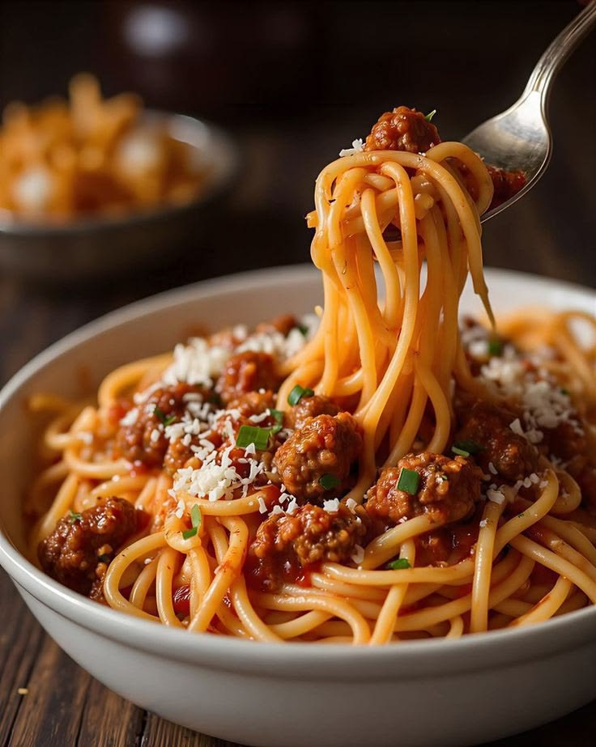
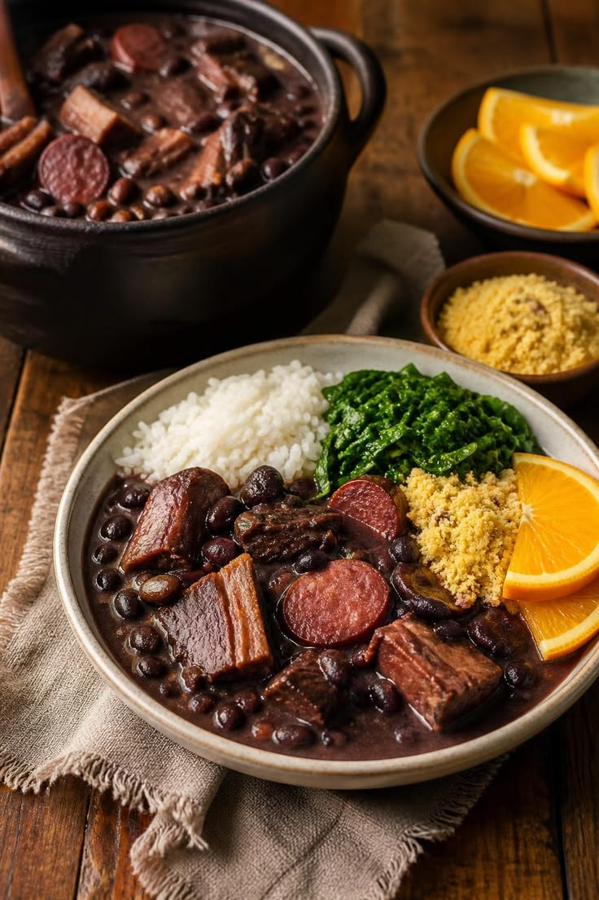

Lasanha de frango
Uma lasanha cremosa de frango, perfeita para aquele almoço especial em família.
Ingredientes
- 500 g de peito de frango
- 500 g de massa para lasanha
- 300 g de queijo mussarela
- 200 g de presunto
- 1 sachê de molho de tomate
- 1 caixinha de creme de leite

Macarronada
Um clássico da cozinha brasileira, feito com macarrão, molho de tomate bem temperado e carne moída.
Ingredientes
- 500 g de macarrão
- 500 g de carne moída
- 1 sachê de molho de tomate
- 1 cebola picada
- 2 dentes de alho
- Sal e pimenta a gosto
- 1 fio de óleo
- Queijo ralado a gosto

Feijoada
Prato brasileiro tradicional preparado com feijão preto e carnes, perfeito para reunir a família.
Ingredientes
- 500 g de feijão preto
- 300 g de carne seca
- 200 g de linguiça calabresa
- 200 g de paio
- 200 g de costelinha suína
- 1 cebola picada
- 3 dentes de alho
- 2 folhas de louro
- Sal e pimenta a gosto
Torta de maçã
Torta delicada com maçãs, canela e uma massa douradinha e crocante.
Ingredientes
- 3 maçãs
- 2 xícaras de farinha de trigo
- 100 g de manteiga
- 1/2 xícara de açúcar
- 1 ovo
- Canela a gosto
- 1 colher de chá de fermento
Torta de limão
Sobremesa refrescante que combina uma base crocante
com creme de limão.
Ingredientes
- 200 g de biscoito maisena
- 100 g de manteiga
- 1 lata de leite condensado
- 1 caixa de creme de leite
- Suco de 3 limões
- 2 claras
- 4 colheres de sopa de açúcar
Torta de banana
Sobremesa simples e aconchegante, feita com bananas maduras e canela.
Ingredientes
- 5 bananas
- 2 xícaras de farinha de trigo
- 1 xícara de açúcar
- 100 g de manteiga
- 1 ovo
- 1 colher de chá de fermento
- Canela a gosto